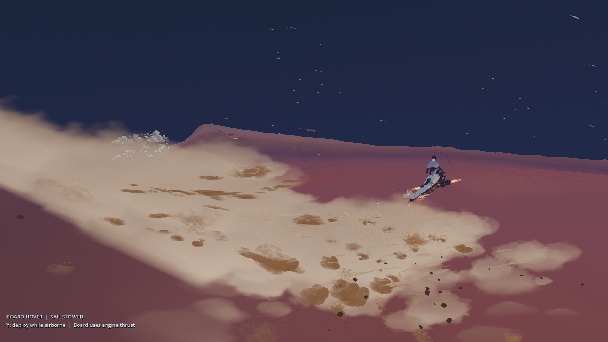

Propulsion signature updated
Reworked engine flames, layered surface dust, and world-space air streaks give the board a more visible relationship with its surroundings.
From development on 2026-11-17 · logged 19 Nov 2026

Visual systems record received. Engine output is becoming considerably harder to overlook.
The jet effects now distinguish ordinary thrust, Boost, and the Final Jet: yellow-orange flame for normal propulsion, blue for Boost, and a longer blue-white plume when the Final Jet fires. Heat shimmer, tightly directed embers, and trailing smoke add detail around the exhaust. With no thrust, the flame shuts off. The side nozzles also respond to steering demand and delivered thrust, rather than burning continuously.
Closer to the ground, the dust system combines shaped cloud masses, softer animated detail, loose debris, and thin surface streaks. Different layers build the low skim, high-speed wake, carve spray, landing burst, and jet wash. Pebbles and fragments follow local gravity, with a bounce before settling. The result leaves a visible record of where the board has been—and how it got there.
Air streaks now sit in the world around the rider, so the board's movement carries it past them. They become more pronounced during Boost, Final Jet, and hard turns, while leaving the central flight line clear.
These captures come from the effects test scenes. The objective is straightforward: make thrust, speed, and ground contact readable through the effects themselves.
